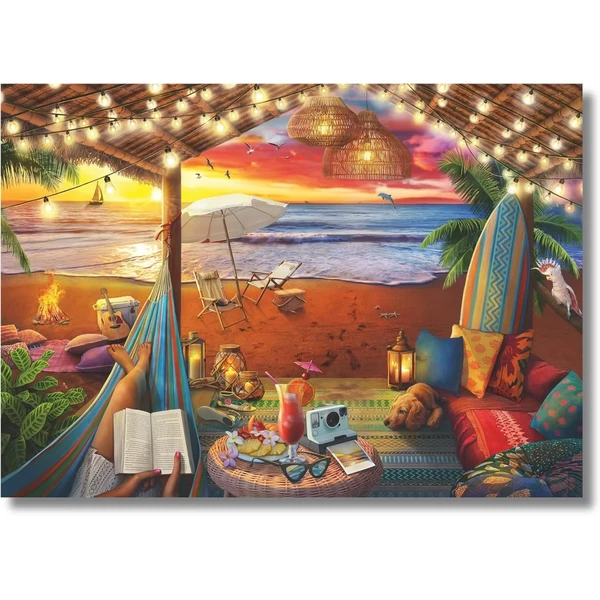
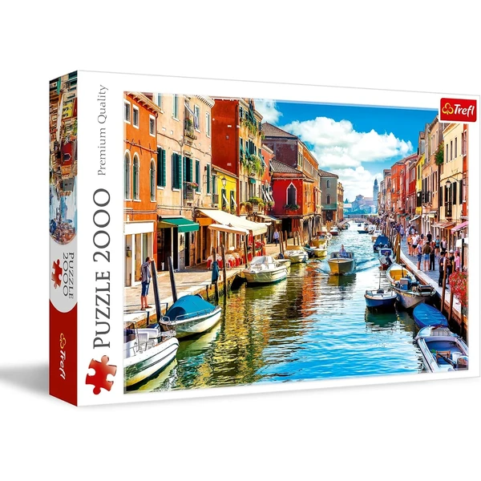

✨ Guía especial
El número de piezas es la decisión más importante al elegir un puzzle: determina tanto el nivel de dificultad como el tiempo de montaje. En esta guía tienes de un vistazo qué rango conviene según la edad, y a continuación un repaso por cada formato, desde los puzzles de pocas piezas para bebés hasta los de varios miles pensados para expertos. Si buscas específicamente puzzles de 1000 piezas, uno de los formatos más populares, tenemos una guía completa dedicada a los puzzles de 1000 piezas.
| Edad | Piezas recomendadas | Por qué |
|---|---|---|
| 1-3 años | 2 a 12 piezas | Piezas grandes y fáciles de agarrar, primeros puzzles de encaje |
| 3-5 años | 12 a 24 piezas | Introducción al puzzle clásico, con imágenes sencillas |
| 5-7 años | 48 a 100 piezas | Ya reconocen bordes y colores para clasificar piezas |
| 7-10 años | 100 a 300 piezas | Más autonomía y paciencia para sesiones más largas |
| 10-14 años | 300 a 500 piezas | Primeros puzzles "de verdad", cercanos al formato adulto |
| Adolescentes y adultos | 500 a 2000 piezas | El rango más popular para regalo y afición habitual |
| Aficionados expertos | 3000 a 6000 piezas | Retos de larga duración, pensados para varias sesiones |
El punto de partida ideal para quien empieza en el mundo del puzzle "serio": suficiente reto sin necesitar varias tardes para terminarlo.
Formato intermedio, ideal como primer puzzle "de adulto" o para completar en un par de sesiones.

Cabaña acogedora Ver en Amazon →Es el formato más buscado de toda la categoría, con guía propia donde recomendamos modelos concretos, comparamos precios y resolvemos las dudas más habituales sobre este tamaño.
El siguiente escalón para quien ya domina las 1000 piezas y busca un reto más largo, habitualmente de varios días.
Formato grande, pensado para sesiones de montaje repartidas en varios días.

Isla Murano Ver en Amazon →Formatos intermedios y de gran formato, con menos variedad de catálogo pero muy valorados entre aficionados habituales:
| Rango | Ideal para |
|---|---|
| 1500 piezas | Un punto intermedio entre 1000 y 2000 piezas |
| 5000 piezas | Retos de larga duración para aficionados experimentados |
Formatos menos habituales pero con demanda propia, sobre todo en las franjas de edad intermedias y en el extremo más experto:
| Piezas | Perfil habitual |
|---|---|
| 100 piezas | Niños de 7-9 años, primeros puzzles con más detalle |
| 200 piezas | Transición entre puzzle infantil y juvenil |
| 300 piezas | Preadolescentes, ya con soltura suficiente |
| 4.000 piezas | Aficionados con experiencia, formato grande de pared |
| 6.000 piezas | El extremo superior, para maratones de montaje |
Entre 2 y 24 piezas encontramos los primeros puzzles pensados para bebés y niños de 1 a 3 años: suelen ser de madera o goma eva, con piezas grandes de encaje y formas reconocibles (animales, vehículos, formas geométricas). Es la puerta de entrada al mundo del puzzle, más centrada en la motricidad fina que en el propio reto de montaje.
Muchos de estos modelos son también de madera, por lo que si buscas opciones concretas puede interesarte nuestra guía de puzzles de madera.